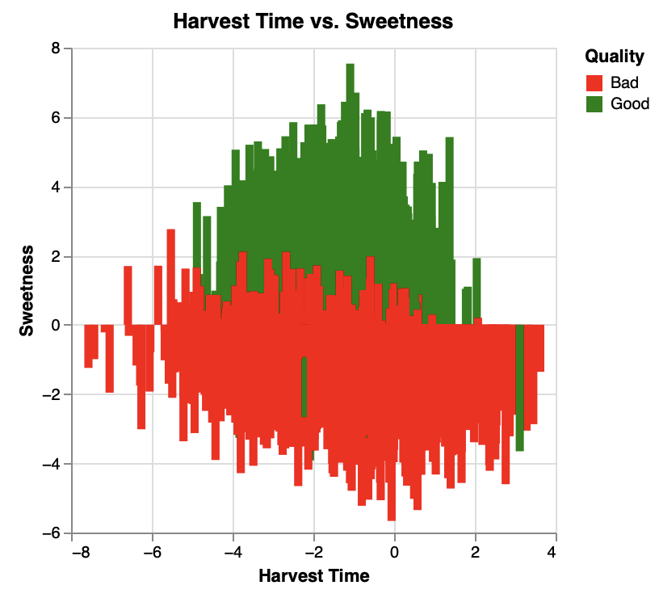
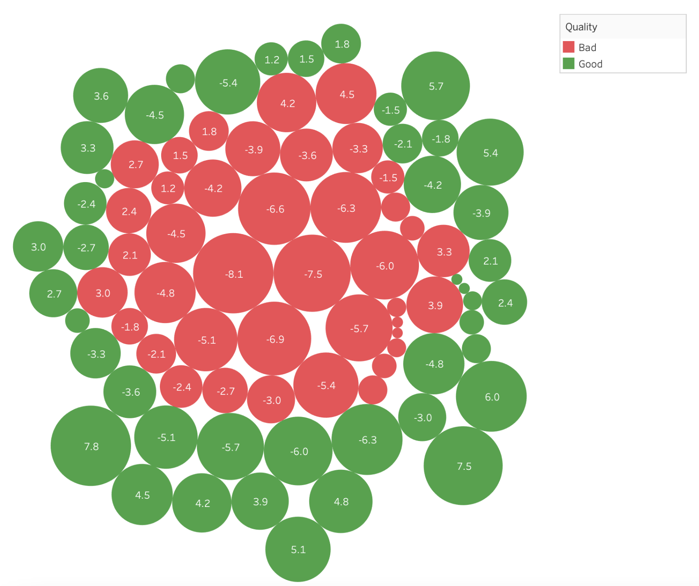

Bananas come in all different shapes and sizes, and some bananas are good while others are not so good. Through these visualizations I want to explore “how do different metrics of a banana affect whether it is considered good quality or bad quality?” There were many different metrics to examine in the dataset that I used, but I chose to specifically look at “Harvest Time”, “Ripeness”, “Sweetness”, and “Size”. Something to note about the dataset being used is that values do not have any units, and rather represent the deviation from what is considered an “average banana” with the value 0 representing the average.
The first visualization was constructed using d3 and explores the relationship between ripeness and harvest time and their affect on the quality of a banana. Through the use of a scatterplot you can see that harvest time does not necessarily have an impact on a banana’s ripeness, however, the resulting ripeness and harvest time do have an effect on the quality together. When a banana has a below average ripeness, it is typically considered bad quality. Also, there is a higher frequency of good quality bananas in the later harvest time. this shows that in the upper lefthand quadrant, where harvest time and ripeness are the highest, the frequency of good quality bananas is higher.
The second visualization was constructed using Altair and explores the relationship between sweetness and harvest time and their affect on the quality of a banana. Immediately when looking that this visualization you can see that harvest time has no effect on the sweetness of the banana - no matter when you harvest it, it does not impact a bananas sweetness according to the chart. However, we can really see how sweetness affects the quality of a banana. In almost all cases, bananas that have above average sweetness are considered good quality, while bananas with below average sweetness are considered bad quality.
The final visualization was constructed in Tableau and explores how a bananas deviation from average size impacts the quality of a banana. For this visualization, each bubble’s physical size represents the absolute value of the datapoint, so the larger the bubble, the more it deviates from the average size. For the most part, you can see that size does not really impact the quality of a banana as there is a large array of good quality bananas and bad quality bananas in every size.
Using these visualizations we can begin to investigate how different aspects of a banana affect its overall quality. Metrics such as sweetness and ripeness have a very evident affect on the quality of the banana, whereas things like size seem to have less of an effect on the quality. This data is important and has many possible use cases, for example it could be used to train an AI to properly classify the quality of bananas based of its different aspects.